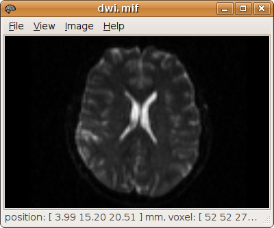
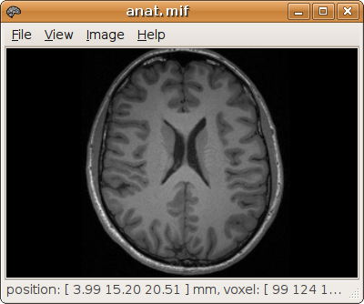

|
|
|
Importing DWI data | |
|---|
White matter tractography relies on the appropriate diffusion-weighted data to infer fibre orientations (see e.g. Mori & van Zijl, 2002 for a review). Diffusion tensor imaging requires a minimum of 7 images (1 b=0 & 6 DWI) per imaging slice, which are typically acquired using a b-value of approximately 1000 s/mm² (see e.g. Basser & Jones, 2002 for a review). For spherical deconvolution, it is recommended to use 60 DW images or more and a b-value around 3000 s/mm² (Tournier et al.. 2004; Tournier et al. 2007).
The data can be supplied to MRtrix in any supported image format. Note that different image formats vary in their ability to carry additional information about the images. In particular, DWI analysis will typically require the DW scheme, which contains the information about the orientations of the various DW gradients used for the different images in the acquisition. The only supported image formats that can carry this information are the DICOM (tested with the Siemens diffusion package, on VB13 and above) and MRtrix formats. It is however possible to use other image formats, in which case the DW scheme can be provided as a separate file (see below).
If the DWI data are stored in DICOM format, it is recommended to convert them to MRtrix format, as this will speed up subsequent access.
Assuming the data are stored on CD (in the /media/cdrom/4356307/ folder) in DICOM format, the mrconvert command can be used:
> mrconvert /media/cdrom/4356307/ dwi.mif
mrconvert: scanning DICOM folder "/media/cdrom/4356307/" - ok
Select series ('q' to abort):
1 - 9 MR images 14:34:56 localiser (*fl2d1)
2 - 192 MR images 14:46:55 t1_mpr_0.9 iso hres (*tfl3d1_ns)
3 - 68 MR images 14:49:07 diff60_b3000_2.3_iPat2+ADC (*ep_b3000#5)
4 - 54 MR images 14:56:45 diff60_b3000_2.3_iPat2+ADC_ADC (*ep_b0_3000)
5 - 108 MR images 14:56:46 diff60_b3000_2.3_iPat2+ADC_TRACEW (*ep_b2950t)
6 - 54 MR images 14:56:47 diff60_b3000_2.3_iPat2+ADC_FA (*ep_b0_3000)
7 - 54 MR images 14:56:47 diff60_b3000_2.3_iPat2+ADC_ColFA (?)
? 3
mrconvert: reading DICOM series "diff60_b3000_2.3_iPat2+ADC"... 100%
mrconvert: DICOM image contains mosaic files - reformating... 100%
mrconvert: copying data... 100%
You can check that the data have been correctly converted using mrinfo:
> mrinfo dwi.mif
************************************************
Image: "dwi.mif"
************************************************
Format: MRtrix
Dimensions: 104 x 104 x 54 x 68
Voxel size: 2.30769 x 2.30769 x 2.3 x 2.3
Dimension labels: 0. left->right (mm)
1. posterior->anterior (mm)
2. inferior->superior (mm)
3. acquisition (?)
Data type: unsigned 16 bit integer (little endian)
Data layout: [ -0 -1 +2 +3 ]
Data scaling: offset = 0, multiplier = 1
Comments: VOLUNTEER (000366) [MR] diff60_b3000_2.3_iPat2+ADC
Transform: 0.9998 5.181e-08 -0.01876 -114.8
-0.000815 0.9991 -0.04347 -101.9
0.01875 0.04347 0.9989 -48.98
0 0 0 1
DW scheme: 68 x 4
Notice the DW scheme entry for dwi.mif: this indicates that the conversion found diffusion-encoding gradient information in the DICOM headers, and successfully included this information in the header for the converted image. This information is required for any type of DWI analysis. If this information was not found in the headers, it is still possible to provide it as a separate file (see here for details).
It can also be useful to use a co-registered anatomical scan for display. MRView can be used to identify particular anatomical landmarks, specify regions of interest more accurately, or display the tractography results on these images. These images need to be coregistered with the DWI data set. If such an image was acquired at the same time as the DWI, and assuming that the subject did not move between the scans, The DICOM headers will contain all the information needed to re-align the two data sets.
The DICOM folder used in the previous example contained a high-resolution T1 image. It can be converted to MRtrix format using the following command:
> mrconvert /media/cdrom/4356307/ anat.mif
mrconvert: scanning DICOM folder "/media/cdrom/4356307/" - ok
Select series ('q' to abort):
1 - 9 MR images 14:34:56 localiser (*fl2d1)
2 - 192 MR images 14:46:55 t1_mpr_0.9 iso hres (*tfl3d1_ns)
3 - 68 MR images 14:49:07 diff60_b3000_2.3_iPat2+ADC (*ep_b3000#5)
4 - 54 MR images 14:56:45 diff60_b3000_2.3_iPat2+ADC_ADC (*ep_b0_3000)
5 - 108 MR images 14:56:46 diff60_b3000_2.3_iPat2+ADC_TRACEW (*ep_b2950t)
6 - 54 MR images 14:56:47 diff60_b3000_2.3_iPat2+ADC_FA (*ep_b0_3000)
7 - 54 MR images 14:56:47 diff60_b3000_2.3_iPat2+ADC_ColFA (?)
? 2
mrconvert: reading DICOM series "t1_mpr_0.9 iso hres"... 100%
mrconvert: copying data... 100%
You can check that the data have been correctly converted using mrinfo:
> mrinfo anat.mif
************************************************
Image: "anat.mif"
************************************************
Format: MRtrix
Dimensions: 192 x 256 x 256
Voxel size: 0.9 x 0.898438 x 0.898438
Dimension labels: 0. inferior->superior (mm)
1. left->right (mm)
2. posterior->anterior (mm)
Data type: unsigned 16 bit integer (little endian)
Data layout: [ +2 -0 -1 ]
Data scaling: offset = 0, multiplier = 1
Comments: VOLUNTEER (000366) [MR] t1_mpr_0.9 iso hres
Transform: 0.998 -0.05412 -0.03311 -74.03
0.05409 0.9985 -0.001794 -100.6
0.03316 2.34e-08 0.9995 -125.8
0 0 0 1
As a final check, both sets of images can then be displayed using MRView:
> mrview dwi.mif anat.mif
This should open a window with both images loaded (you can swich between images using the Image menu - see here for details):
 The DW scheme specifies the direction and b-value for each volumes of the DWI data set. MRtrix will look for the DW scheme in the DW image header, otherwise this information will need to be supplied in a separate file. This simple text file should contain a 4 × N matrix, where N is the number of volumes in the DWI data set. Each line should consist of 4 numbers: the [ X Y Z ] components of the gradient direction, followed by the b-value. Note that the magnitude of the direction vector is ignored. Below is an example showing the DW scheme for a simple acquisition: 1 b=0 image followed by 6 DW images with b = 1000 s/mm²:
0 0 0 0 1 1 0 1000 1 0 1 1000 0 1 1 1000 1 -1 0 1000 1 0 -1 1000 0 1 -1 1000
These directions should be provided with reference to the coordinate system used by MRtrix. Note that this convention will most likely differ from the reference frame of the scanner. In this case, the gradient orientations specified in the pulse sequence will need to be adjusted accordingly. Thankfully, in most cases it is simply a matter or inverting the components of one or more of the gradient orientation components.
It is also possible to extract the DW scheme from the image header (provided one is found). This can be achieved by supplying the -grad option to mrinfo. For example:
> mrinfo /data/DICOM_folder/ -grad encoding.b
will scan the DICOM data set specified and store the DW scheme in the file encoding.b in the format described above.
|
|
|
top | |
|---|